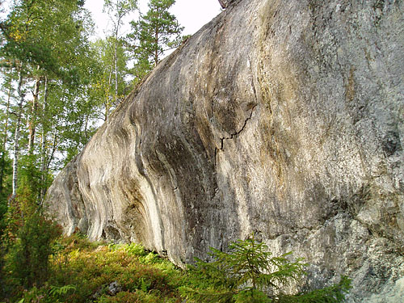

Kraftsten
Lat: 59.29805555555556
Long: 18.54083333333333
Allmänt
Klippan ligger i skugga på dagen, relativt öppet för kvällssolen. Mestadels kraftigt överhängande klättring med mycket grepp och hål. Rekomenderade problem är; Läderlappen, Buttman, Brutus och Hulken.
Vägbeskrivning
Kraftsten
Se även
Strömmadalsklippan
Boulderproblem
Vänstra delen
- 1
- Johnny Puma
- 6c
- Starta med båda händerna i stort undercling, långt flytt rakt upp.
- 2
- Mickes Beach
- 6b
- Starta på tydlig pinch, utsteg till vänster (lättare) eller höger (finare) om sprickan.
- 3
- Buttman
- 7b
- Starta som Nr.5 ”Läderlappen”, elimination rakt upp via ett vasst korall-liknande grepp mellan Nosferatu och Läderlappens utsteg.
- 4
- Nosfereatu
- 7a
- Starta som Nr.6 ”Läderlappen”, men rakt upp till bra lister och utsteg åt vänster.
- 5
- Läderlappen
- 6b+
- Starta längst in under överhänget med händerna på tydligt hangel, följ denna till jug vid läppen och fortsätt i sprickan upp till höger.
- 6
- Brutus
- 7b
- Starta i två bra grepp som Nr.7, traversera hela klippan åt vänster under läppen och avsluta vid det s-formade trädet till vänster av ”Johnny Puma”.
- 7
- Mystique
- 7b
- Starta på 2 bra grepp upp till jugge till vänster sedan upp till en liten list rakt upp, via mikrolister till höger till ett vasst hål sedan rakt upp. OBS: Varken sprickan från ”Läderlappen” eller grepp till höger som ingår till ”Luke Skywalker” ingår!
Samma klippdel … men ett problem till:

- 1
- Luke Skywalker
- 6c+
- Starta precis till vänster om stora granen från tydliga sidotag, rakt upp.
2. ”Mystique”
3. ”Brutus”
4. ”Nosferatu”
5. ”Buttman”
6. ”Läderlappen”
Högra delen

- 1
- Joker
- 6b
- Starta upp för rampen, rakt upp och utsteg lite till höger.
- 2
- Flexnes
- 6b
- Starta i tydlig spricka sedan rakt upp.
- 3
- Flexnes ss
- 6c
- Sittstart till ”Flexnes”
- 4
- Marvel
- 7c
- Starta med vänster hand på Flexnes högra startgrepp, upp snett höger via mikrolist till stor pinch, avsluta som Hulken. Den som ids får gärna flytta på stenen framför problemet.
Lilla delen till höger
- 1
- Elsa
- 6a
- Aréten till höger. Starta med händerna på stora hyllan, rakt upp. Avsluta på hyllan eller kliv vänster över i ”Hogans” utsteg.
- 2
- Hogan
- 7a
- Starta inne i nischen, upp till vänster till bra vasst grepp på rampen, rakt upp. Kanten och aréten (Elsa) till höger ingår ej.
- 3
- Hulken
- 7a+
- Samma start som ”Hogan” men trav. till vänster med ett långt move till ett bra hålgrepp därefter rakt upp.
Om man fortsätter gå ytterligare en bit längst värmdöleden kommer man till fler klätterbara väggar, bla annat
Vågväggen
ca 10 problem med nice men udda klättring:

Kategori:Nacka-Värmdö
Kategori:Stockholm
Category:Överhäng
Copyright (C) Permission is granted to copy, distribute and/or modify this document under the terms of the GNU Free Documentation License, Version 1.3